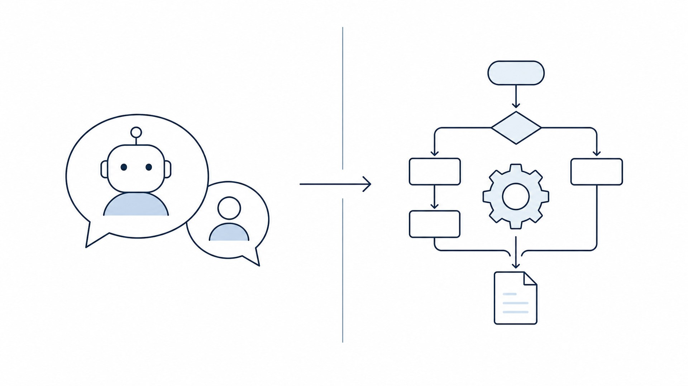
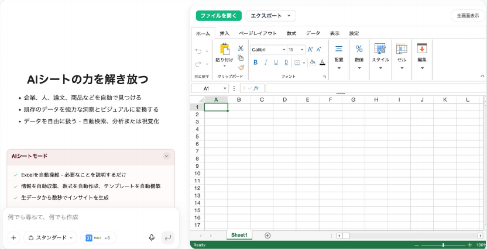
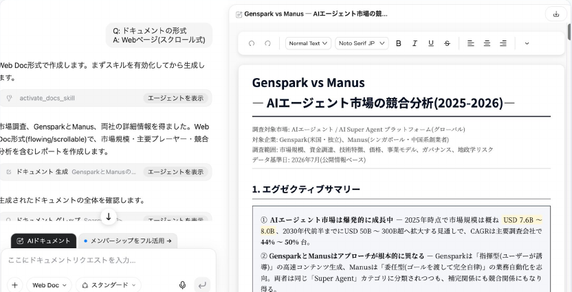
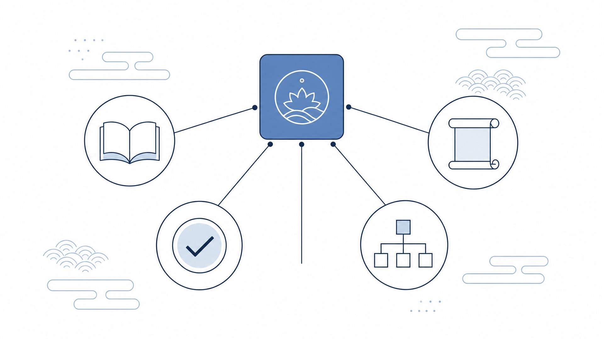
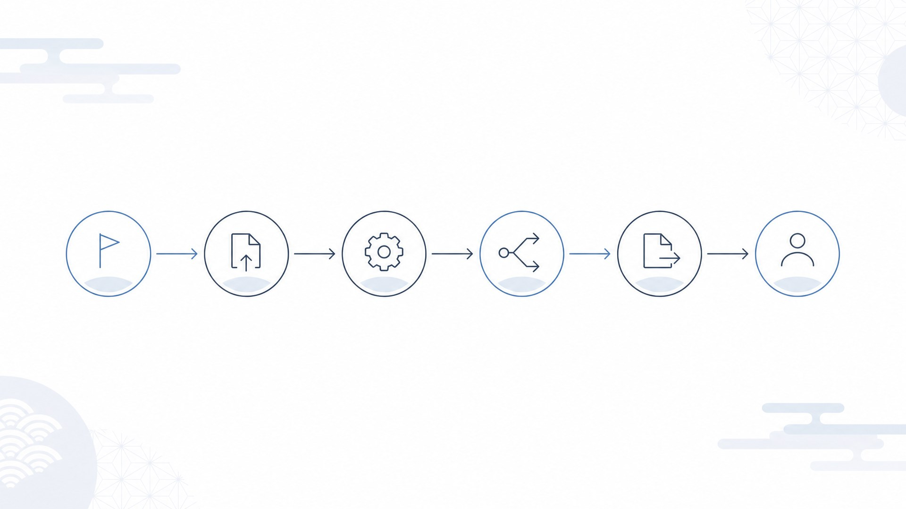
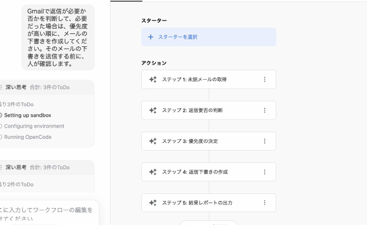
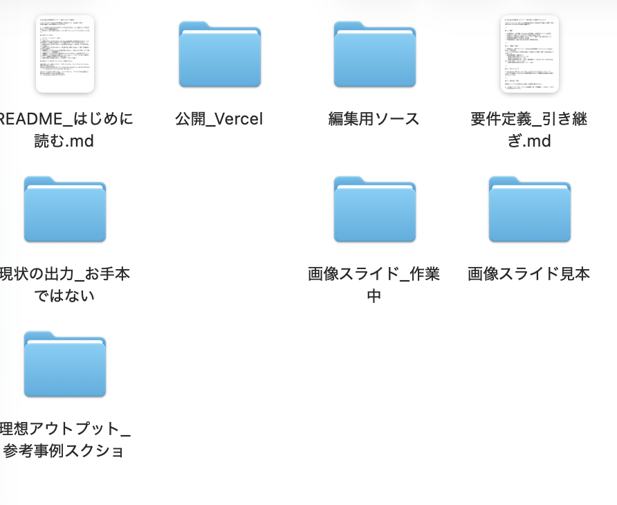
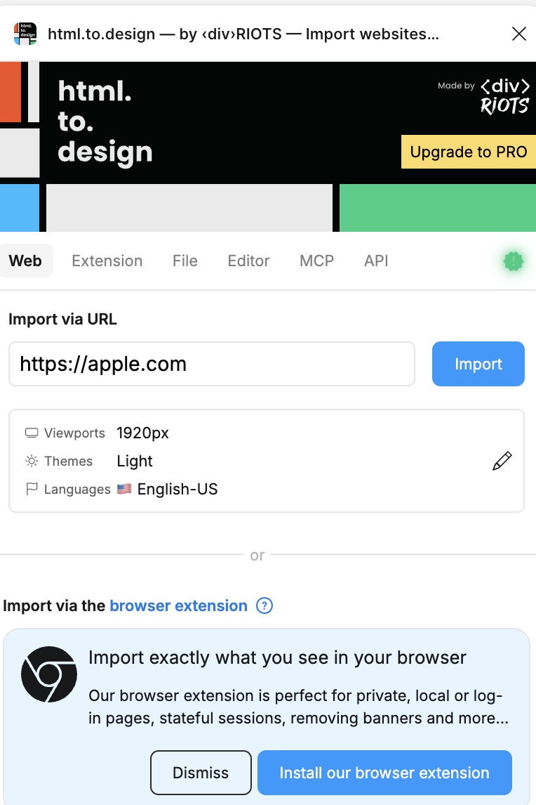

Genspark
活用研修
調べるから作るまでを一つでこなす。
Skillで品質を、Workflowで手順を標準化する。
実務で使い分けられる
Skills・Workflowsでゼロにする
実務資料を作成できる
資料作成Skillを設計できる
Gensparkは、調べるから作るまでを
一つの環境でこなすAIワークスペース
キーワードは「仕事を完成させる」こと。
回答して終わりではなく、成果物まで届ける。
生成AIは「答える」、エージェントは「計画して実行する」

質問に回答する
聞かれたことに対して、その場で答えを返す。判断や実行は人が行う。
仕事を計画・実行する
目的から必要な作業を計画し、ツールを使い分けて成果物まで作る。
確かめる
設計する
決める
実行する
整理する
報告資料へ
HTML / Word / PDF
整形・集計
画像を作成
HTML / CSS / JS

『何でも尋ねて、何でも作成』
Excelと同じ操作画面

『Web Docで作って』
見出し・表・出典まで整形
Web情報
集計・可視化
定例資料
Webツール
目的と完成形を伝え、対話で仕上げるのが基本操作
イメージを伝える
会話しながら修正する
良い指示は「目的・対象者・参考資料・完成形式・制約」の5要素
ゴール
読ませるか
情報
作るか
注意点
良い指示は効く。でも毎回5要素を書くのは、正直めんどう
手間がかかる
抜け漏れが起きやすい
ばらつきが出る
この「毎回書く手間」と「抜け漏れ」を、なくせないか？
質問に答えるだけで、良い指示入りの「要件定義書」を自動で作る
使い回す
一度作れば、次からは質問に答えるだけ。良い指示を毎回ゼロから書かなくていい。
Skillは、知識と品質基準ごと再利用する仕組み
専門知識・指示・構成・表現をまとめて登録する。
だから毎回、同じ品質基準で成果物を作れる。

テンプレは見た目、Skillは考え方まで再利用する
テンプレート
Skill
Skill化は「繰り返し・高頻度・高品質」の業務に向く
体験・相談
1件の広告費
新しく試す
構成・言葉
増えた？減った？
あと何件？
いくらかかった？
デモデータ
→ 資料作成
会社の見た目
Workflowは、複数の作業を決めた順番で実行する仕組み
毎回同じ手順で進めたい業務を、流れごと登録する。
Skillが「品質」を担保するなら、Workflowは「手順」を担保する。

Skillは品質を、Workflowは手順をそろえる
成果物の品質をそろえる
何を作るかの「質」を一定に保つ。専門知識・構成・表現・品質基準までまとめて再利用する。
仕事の手順をそろえる
どう進めるかの「流れ」を一定に保つ。入力→処理→承認までを自動で回す。
Workflowは開始条件から承認まで6要素で組む
週次レポート・議事録・問い合わせ対応に使える
週次レポート
情報収集から週次レポートを自動で作成。
毎週月曜の朝、社内システムやWebから最新情報を集めて要約し、テンプレに沿ってレポート化。
議事録＋タスク
会議内容から議事録とタスク一覧を作成。
録音・文字起こしから要点を抽出し、決定事項・宿題・担当者・期限まで自動でリスト化。
問い合わせ対応
問い合わせ内容を分類して回答案を作成。
過去のFAQ・マニュアルを参照し、担当割り振りと回答ドラフトを提示。最終確認は人が行う。
✓ 09:01 返信必要 3件を抽出
✓ 09:01 優先度を判定
● 09:02 下書き・確認待ち
高：契約確認
中：日程調整
低：資料送付
人が確認後に送信
取得 → 判断 → 優先度 → 下書き
② Skillを配置
判断・文章作成を各ステップで使う
③ 人の確認を固定
送信前で必ず止める

品質をそろえるならSkill、手順をそろえるならWorkflow
同じ品質で作りたい成果物
提案書・報告書・分析メモなど、
出力の「型」と「基準」を統一したいもの
同じ手順で進めたい業務
週次締め・議事録配布・問い合わせ振り分けなど、
「順番」と「トリガー」を固定したいもの
一つの業務の中で、品質と手順を分けて設計するのが理想
作成前に目的・対象者・結論と参考資料をそろえる
指示文から作る／ファイルから作る、モードを選ぶ
指示文から新しく作成する
目的・対象者・ページ数などを文章で指示してゼロから生成
既存ファイルを読み込んで資料化する
PDF・Word・議事録などをそのままアップロードして変換
Professional Mode
実務・提案向けの整った資料に。編集可能なテキスト・図表・チャートで構成される。
Creative Mode
表現に幅を持たせたい資料に。各ページを1枚のビジュアルとして生成する。
実務資料Skillで構成もデザインも統一する
実務資料Skillを選択する
違いを理解する
デザインを再現する
品質を統一する
構成・内容・再現性を確認し、修正を繰り返す
再現性を確認
もう一度比較
理想アウトプットと間違いmdを作る

画像や実例で置く
文章で残す
primary: #182B49 / font: Noto Sans JP
margin: 32pt / NG: 小さい文字
Fix LayoutとPolish Contentで文字切れと内容を整える
修正するページと箇所を指定し、文章・画像・レイアウトを分けて直す
文字切れや重なりを直す
はみ出し・余白のズレ・文字サイズなど、見た目に関わる問題を自動で調整。
内容と構成を改善する
表現のブラッシュアップ、話の流れの整理、根拠の補強など、中身の質を上げる。
事実・機密・著作権・レイアウトを確認して用途別に出力する
用途別に出力
HTMLで作った成果物を、Figmaで細部まで仕上げる
AIで全体を作ったあと、Figmaで文字サイズ・余白・配置・画像の見せ方を整える。

今日から自分の業務を
一つ、Skill化してみる
調べるから作るまでを一つでこなし、
品質はSkillで、手順はWorkflowで標準化する。